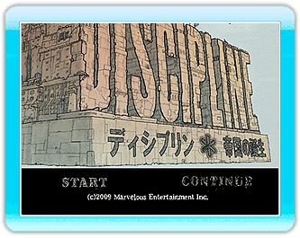

●ゲームを始める

ポインターを使って「START」もしくは「CONTINUE」を選択してを押してください。
● START
はじめてゲームをプレイする場合にはこちらを選択してください。
● CONTINUE 続きからゲームをプレイする場合にはこちらを選択してください。
●チュートリアル
「START」を選択した場合、オープニングデモの後、ディシプリンに収容されます。
/でプレイヤーキャラクターを移動させることができます。隣にいる収容者にポインターを合わせてを押すと会話が始まります。彼がディシプリン内でのルールを説明してくれます。
●ゲームを終える
で「HOMEボタンメニュー」を表示し、「Wiiメニューへ」を選択してください。